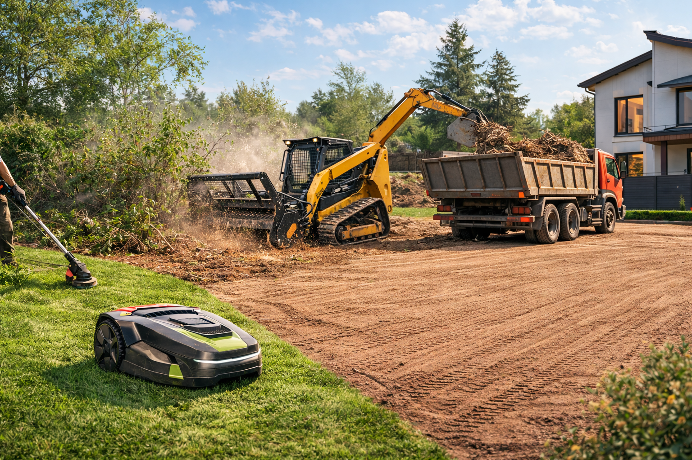
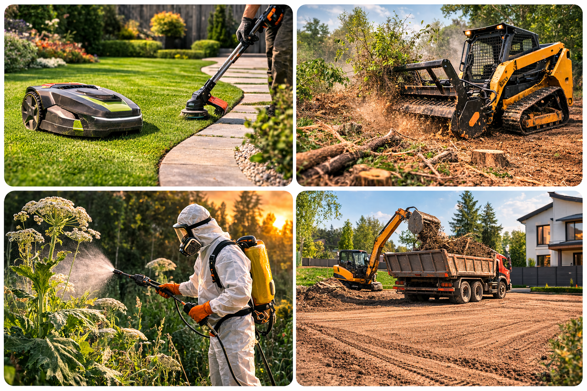

для ровного регулярного газона без стационарного монтажа
Современный ландшафтный сервис
Превращаем заросший участок в чистую, управляемую территорию.
ЧИСТОЛУГ берёт на себя полный цикл: от аккуратного покоса газона и работы робот-косилки до уничтожения борщевика, удаления пней и тяжёлой расчистки мульчером.

для кромок, рельефа, бурьяна и участков с ручным проходом
для сложной расчистки, опасных очагов и подготовки территории
робот-косилка для регулярного, ровного и тихого покоса
газонная трава триммером на участках и придомовых территориях
гербицидная обработка борщевика и точечная борьба с повторным ростом
мульчирование и расчистка заросших территорий под проектную задачу
Что делает компания
Пять направлений, которые закрывают участок от первого покоса до полной расчистки.
Мы не продаём один инструмент всем подряд. Под каждую задачу собирается рабочая схема: техника, люди, шаги, вывоз, финальная чистота и повторный контроль.
Покос травы и бурьяна
Газон, высокая трава, сухостой, склоны, заборы, бордюры и труднодоступные места. Работаем триммером и мотокосой без потери качества на кромках.
- от 15 ₽/м² за газонную траву
- от 30 ₽/м² за плотный бурьян
- от 6000 ₽ минимальный выезд бригады
Уничтожение борщевика
Опасные очаги снимаем системно: осмотр, защитные меры, гербицид, механическое удаление и контроль повторных всходов.
- от 25 ₽/м² гербицидная обработка
- от 70 ₽/м² комплексное уничтожение
- от 3000 ₽ минимальный заказ
Робот-косилка без монтажа кабелей
Привозим робота на объект, настраиваем маршрут и оставляем на цикл покоса. Подходит для ровных газонов, регулярного сервиса и тех, кто ценит тишину.
- от 8 ₽/м² за автономный покос
- до 30 соток одним проектом
- от 5000 ₽ за суточный цикл
Удаление пней
Фрезеровка, ручное выкапывание, химическое удаление, вывоз и засыпка. Решаем задачу в чистовую, чтобы участок был готов к благоустройству или стройке.
- от 5000 ₽ фрезеровка малых пней
- от 1500 ₽ ручное и химическое удаление
- от 4000 ₽ минимальный заказ
Мульчер и расчистка heavy-duty
Для сложных площадей, кустарника, поросли и мелколесья. Подходит, когда обычный покос уже не решает задачу и нужна серьёзная подготовка территории.
- от 20 ₽/м² мульчирование травы
- от 45 ₽/м² мелколесье и трудные зоны
- от 30 000 ₽ минимальный выезд техники
Инфографика
Как ЧИСТОЛУГ собирает рабочую систему под ваш участок.
Для каждого объекта подбираем свой рабочий сценарий: оцениваем плотность растительности, рельеф, доступ техники и конечную задачу, а затем запускаем нужную комбинацию работ.
Робот-косилка и триммер отвечают за аккуратную геометрию, края и регулярность.
Бурьян, кустарник, поросль и мелколесье закрываются мульчером и тяжёлой расчисткой.
Борщевик требует защитных сценариев, гербицидов и повторного контроля по циклу.
Сбор, погрузка, вывоз, засыпка и выравнивание превращают работу в законченный результат.

Как работаем
От первого контакта до чистой площадки без хаоса и лишних выездов.
Осмотр и сценарий
Определяем площадь, высоту травы, плотность сорняка, наличие пней, подъезды и задачу участка.
Подбор техники
Назначаем связку: триммер, робот-косилка, гербицид, фреза, мульчер или комбинированный выезд.
Основной проход
Проводим покос, расчистку или уничтожение очага с защитой, контролем и точной маршрутизацией.
Финиш и контроль
Собираем остатки, загружаем, вывозим, выравниваем поверхность и при необходимости ставим повторный цикл.
Типовые задачи
Три частых запроса, с которыми к нам обращаются в сезон и вне сезона.
Нужен быстрый и чистый покос
Газон, дачный участок, кромки вдоль дорожек и заборов, повторные выезды по графику.
Решение: триммер / робот-косилкаУчасток зарос и стал небезопасным
Бурьян, сухостой, борщевик, неравномерный рельеф, заброшенные зоны после сезона или стройки.
Решение: мотокоса + гербицид + расчисткаНужна тяжёлая подготовка территории
Кустарник, поросль, пни, мелколесье и участок под строительство или благоустройство.
Решение: мульчер + фрезеровка + вывозПрайс
Прозрачная матрица цен по основным направлениям.
Базовые цены помогают быстро сориентироваться по бюджету. Точный расчёт зависит от площади, доступа техники, плотности растительности, сбора и необходимости вывоза.
Покос травы с ручной косилкой
от 15 ₽/м² до 40 ₽/м²
| Услуга | Описание | Объём | Цена |
|---|---|---|---|
| Покос газонной травы | Обычная газонная трава высотой до 30–40 см. | м² | от 15 руб/м² |
| Покос высокой травы | Заросшие участки 40–80 см, усиленная леска или нож. | м² | от 20 руб/м² |
| Покос бурьяна | Густые сорняки и бурьян до 1–1.5 м, металлический нож или диск. | м² | от 30 руб/м² |
| Труднодоступные места | Вокруг деревьев, столбов, бордюров, зданий и на неровном рельефе. | м² | от 35 руб/м² |
| Вдоль заборов и бордюров | Аккуратный подкос вдоль ограждений и дорожек. | м² | от 25 руб/м² |
| Покос на склонах | Наклонные участки, где нельзя использовать колесную технику. | м² | от 25 руб/м² |
| Заброшенные участки | Расчистка территории с густой растительностью и сорняками. | м² | от 40 руб/м² |
| Укладка в валки после покоса | Скошенная трава складывается в валки или кучи. | м² | от 10 руб/м² |
| Ручной сбор и складирование | Сбор граблями и складирование у заказчика. | м² | от 15 руб/м² |
| Погрузка скошенной травы | Сбор травы и погрузка в мешки или контейнер. | м² | от 20 руб/м² |
| Расчистка участка триммером | Подготовка территории перед строительством или благоустройством. | м² | от 35 руб/м² |
| Срез мелкой поросли | Удаление молодой древесной поросли до 2 см диаметром. | м² | от 40 руб/м² |
| Удаление сухостоя | Скашивание сухой травы и прошлогодней растительности. | м² | от 20 руб/м² |
| Погрузка растительных остатков | Погрузка травы, бурьяна и растительных остатков для вывоза. | м³ | от 1000 руб/м³ |
| Вывоз скошенной травы | Транспортировка растительных отходов на полигон утилизации. | м³ | 1500–3000 руб/м³ |
| Минимальный выезд бригады | Минимальная стоимость работ при небольшом объёме. | заказ | 6000 руб |
Уничтожение борщевика
от 25 ₽/м² до 70 ₽/м²
| Услуга | Описание | Объём | Цена |
|---|---|---|---|
| Осмотр участка и оценка | Выезд специалиста, определение площади заражения и смета. | выезд | от 1000 ₽ |
| Гербицидная обработка | Опрыскивание профессиональными системными гербицидами. | м² | от 25 ₽/м² |
| Механическое удаление | Скашивание триммером или мотокосой с металлическим ножом. | м² | от 40 ₽/м² |
| Выкапывание с корнем | Полное удаление растения вручную для одиночных очагов. | растение | от 250 ₽/шт |
| Комплексное уничтожение | Покос, гербицидная обработка и контроль повторных всходов. | м² | от 70 ₽/м² |
| Расчистка участка перед обработкой | Удаление травы и густой растительности перед основной фазой. | м² | от 30 ₽/м² |
| Сбор растительных остатков | Ручной сбор скошенных растений и складирование. | м² | от 20 ₽/м² |
| Погрузка растительных остатков | Погрузка растительности и отходов в транспорт. | м³ | от 1000 ₽/м³ |
| Вывоз растительных отходов | Транспортировка борщевика и остатков на полигон. | м³ | от 3000 ₽/м³ |
| Минимальный заказ | Минимальная стоимость выполнения при небольшом объёме. | заказ | от 3000 ₽ |
Услуги робот-косилки
от 8 ₽/м² и от 1200 ₽/час
| Услуга | Описание | Объём | Цена |
|---|---|---|---|
| Выезд и оценка участка | Осмотр, определение площади, препятствий и времени работы. | выезд | от 1000 ₽ |
| Покос газона роботом | Автономное кошение на участке клиента без участия оператора. | м² | от 8 ₽/м² |
| Средний участок | Доставка, настройка и полный цикл покоса до 10 соток. | участок до 10 соток | от 4000 ₽ |
| Большой участок | Работа несколько часов или дней до полного завершения покоса. | участок до 30 соток | от 8000 ₽ |
| Почасовая аренда | Робот-косилка на объекте с настройкой и контролем работы. | час | от 1200 ₽/час |
| Суточная аренда | Робот доставляется на участок и работает в течение суток. | сутки | от 5000 ₽/сутки |
| Контроль оператора | Покос с периодическим надзором специалиста. | час | от 1500 ₽/час |
| Настройка и запуск | Подготовка робота, настройка параметров и запуск программы. | услуга | от 1500 ₽ |
| Повторный покос | Регулярное обслуживание участка по графику. | м² | от 6 ₽/м² |
| Доставка робот-косилки | Транспортировка оборудования на объект и обратно. | выезд | от 1000 ₽ |
| Срочный выезд | Работы в день обращения или вне очереди. | выезд | от 2000 ₽ |
| Минимальный заказ | Минимальная стоимость работ для сервиса робот-косилки. | заказ | от 8000 ₽ |
Удаление пней
от 1500 ₽ до 20 000 ₽
| Услуга | Описание | Объём | Цена |
|---|---|---|---|
| Выезд специалиста и оценка | Осмотр доступа техники, измерение диаметра пней и смета. | выезд | от 2 000 ₽ |
| Фрезеровка до 20 см | Измельчение пня фрезой на глубину около 20 см. | пень (⌀ ≤20 см) | от 5 000 ₽ |
| Фрезеровка 21–30 см | Глубина до 20–30 см. | пень (⌀ 21–30 см) | от 7 500 ₽ |
| Фрезеровка 31–40 см | Глубина до 30–40 см. | пень (⌀ 31–40 см) | от 9 000 ₽ |
| Фрезеровка 41–50 см | Глубокая фрезеровка средней категории. | пень (⌀ 41–50 см) | от 12 000 ₽ |
| Крупные пни более 50 см | Глубокая фрезеровка, расчёт индивидуально. | пень (⌀ >50 см) | от 20 000 ₽ |
| Ручное выкапывание корней | Полное удаление с корнем при ограниченном доступе. | пень | от 1 500 ₽ |
| Химическое удаление | Обработка реагентом или селитрой, медленный метод. | пень | от 1 500 ₽ |
| Погрузка и вывоз | Погрузка измельчённых остатков или целых пней. | м³ | от 1 000 ₽ |
| Засыпка ямы и выравнивание | Трамбовка, засыпка и восстановление поверхности. | пень / шт. | от 500 ₽ |
| Комплекс под ключ | Фреза + вывоз + засыпка и утрамбовка. | пень | от 5 000 ₽ |
| Минимальный заказ | Гарантирует выезд и организацию работ по малым объектам. | заказ | от 4 000 ₽ |
Работы мульчером и расчистка
от 20 ₽/м², от 8000 ₽/сотка, от 25 000 ₽/га
| Услуга | Описание | Объём | Цена |
|---|---|---|---|
| Выезд и осмотр участка | Осмотр территории и определение плотности растительности. | выезд | от 2000 ₽ |
| Мульчирование травы | Измельчение высокой травы и сорной растительности. | м² | от 20 ₽/м² |
| Мульчирование густой травы и бурьяна | Высокая трава более 50 см и плотная растительность. | м² | от 30 ₽/м² |
| Мульчирование кустарника | Измельчение кустарников и поросли. | м² | от 35 ₽/м² |
| Мульчирование мелколесья | Удаление молодых деревьев диаметром до 10–15 см. | м² | от 45 ₽/м² |
| Расчистка участка мульчером | Полная расчистка от травы, кустарника и мелких деревьев. | сотка | от 8000 ₽/сотка |
| Расчистка заросших территорий | Подготовка земли под строительство, сельхоз или благоустройство. | гектар | от 25 000 ₽/га |
| Мульчирование порубочных остатков | Измельчение веток, деревьев и древесных отходов на месте. | м² | от 30 ₽/м² |
| Планировочная расчистка | Измельчение растительности с выравниванием участка. | м² | от 40 ₽/м² |
| Труднодоступные места | Работа на склонах, лесных участках и в зарослях. | м² | от 45 ₽/м² |
| Минимальный заказ | Минимальная стоимость выезда техники. | заказ | от 30 000 ₽ |
| Валка дерева | Цена зависит от диаметра дерева. | шт | от 2 000 ₽ |
| Расчистка лесного участка | Мелколесье, цена зависит от диаметра дерева. | сотка | от 6 000 ₽ |
| Сложная расчистка участка | Цена зависит от сложности работ и плотности зарослей. | сотка | от 10 000 ₽ |
FAQ
Коротко о том, что обычно спрашивают перед выездом.
Собрали основные ответы заранее, чтобы вы быстрее поняли, как строится работа, от чего зависит стоимость и что потребуется для точного расчёта.
С какими участками вы работаете?
С газонами, частными участками, территориями с бурьяном, борщевиком, сухостоем, кустарником, порослью, пнями и мелколесьем. Работаем как по точечной задаче, так и под комплексную расчистку.
Можно ли заказать только осмотр и смету?
Да. Для борщевика, удаления пней, робот-косилки и мульчера предусмотрен отдельный выезд специалиста с оценкой доступа, объёма и нужной технологии.
Что делать со скошенной травой и остатками?
Возможны разные сценарии: оставить в валках, собрать и складировать, погрузить в контейнер или организовать вывоз на полигон. Это выбирается на этапе сметы.
Робот-косилка работает без монтажа кабелей?
Да. Робот привозится на объект, настраивается под конкретную задачу и выполняет цикл покоса без стационарного монтажа кабелей и постоянной инсталляции.
Когда нужен мульчер, а не обычный покос?
Когда участок зарос кустарником, порослью, высокой плотной травой или мелколесьем. Мульчер нужен там, где обычный покос не даёт нужной скорости и глубины расчистки.
Можно ли поставить работы на регулярный график?
Да. Особенно это актуально для газонов и робот-косилок. Регулярные выезды помогают удерживать участок в чистом состоянии и не доводить его до дорогой тяжёлой расчистки.
Заявка
Опишите участок и отправьте запрос на расчёт за пару минут.
Укажите площадь, характер растительности и цель работ. Запрос откроется в почтовом клиенте уже заполненным и готовым к отправке на info@chistolug.ru.
Площадь, фото участка, адрес выезда и понимание, нужен ли сбор/вывоз.
Подъезд техники, сроки, желаемая частота обслуживания и детализация сметы.